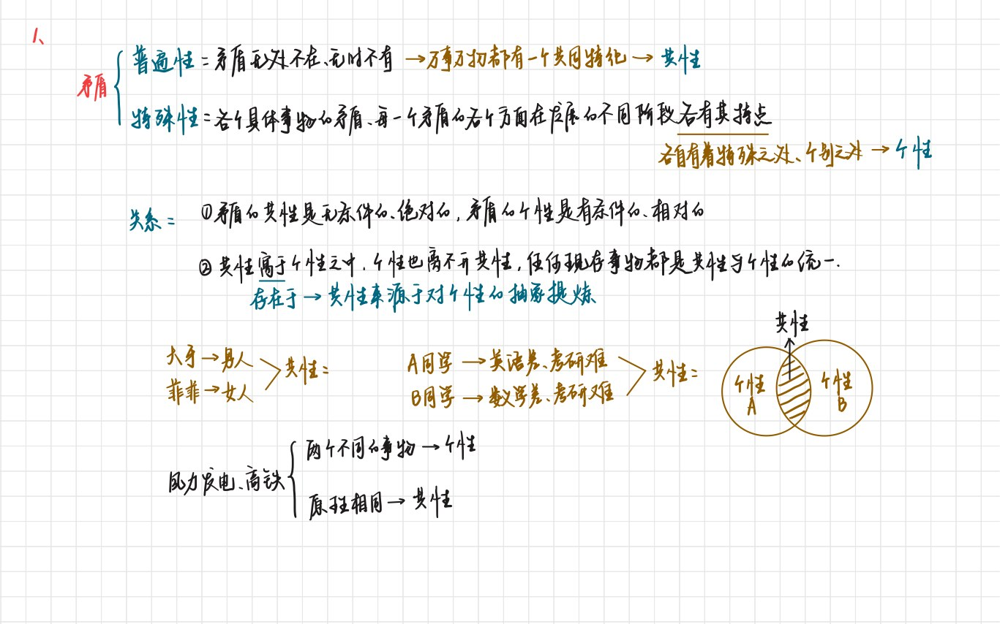
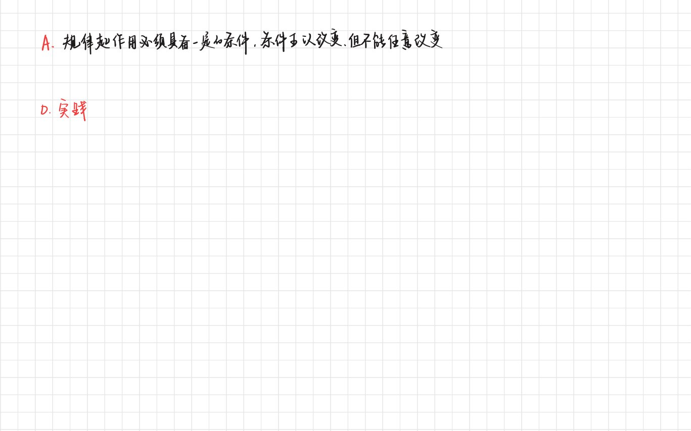

1题单选
视频已定位
矛盾的普遍性和特殊性的辩证关系（共性寓于个性之中）
《X八第三套·单选精讲》0:00:00小节：矛盾普遍性与特殊性


题目原文
经过多年实践，中国中车探索出一条以能力迁移和系统协同为特征的“第二曲线”培育路径。这套产业培育体系充分利用了技术同源、产业共链等优势。比如，风电机组可以看成“立起来的高铁”。原因在于，风力发电的过程与高铁电制动的过程和原理是一样的。从利用800千瓦“铁路机车交流电机”试验平台，匹配完成了660千瓦“风力发电机”的出厂试验和型式试验，到移植“高原机车”的设计与运维经验，研发出“高海拔风机”，中国中车迅速在风电装备领域妄露头角。将高铁领域积累的可靠性设计体系、工程化经验、精密制造技术以及质量保障能力移植到风电产业，中国中车快速突破风电整机核心技术，向市场提供高性能、长寿命的高质量风电装备。这套产业培育体系蕴含的哲学道理是
A. 规律起作用的范围是可以任意改变的
B. 矛盾的普遍性和特殊性相互联结
C. 间接经验比直接经验更可靠
D. 正确的理论是真理与价值统一的基础